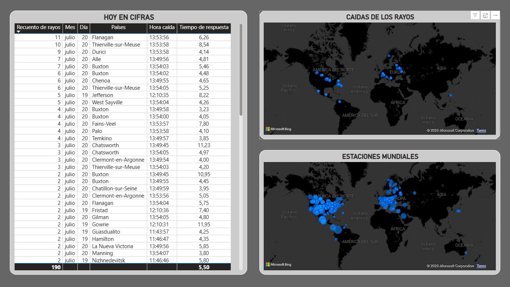
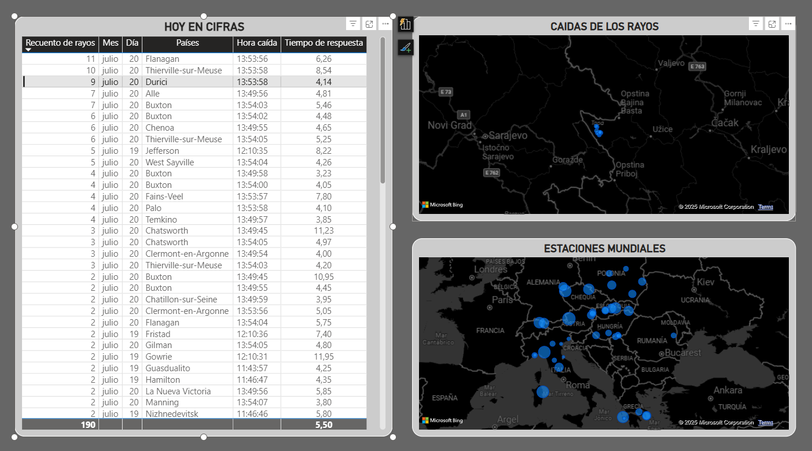

Objetivo
Monitorizar en tiempo real la actividad eléctrica global, identificar patrones de tormentas y analizar intensidad, ubicación y latencia de detección de cada rayo.
Recopila rayos y estaciones detectoras y los presenta con enfoque visual, analítico y geográfico.
Tecnologías
- Python: extracción y limpieza (
asyncio,websockets) - MySQL: histórico con fecha/hora, país, polaridad, lat/lon
- Power BI: mapas, KPIs y tablas casi en tiempo real
Arquitectura
- Conexión al WebSocket de Blitzortung para recibir eventos.
- Procesado en Python: enriquecimiento (región/país) y latencia.
- Persistencia en MySQL optimizada para lectura desde Power BI.
- Visualización y exploración en Power BI.
Capturas del dashboard
Vista principal con KPIs diarios, mapa de rayos y mapa de estaciones.

